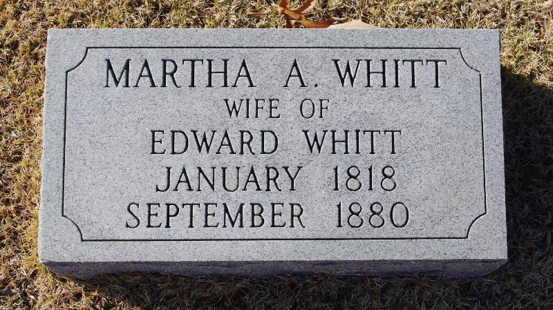

| 
Martha Ann TAYLOR (1818-1880) |
Martha Ann TAYLOR
-- North Carolina, Marriage Collection (1741-2004) Martha married Edward WHITT on 2 May 1850 in Rockingham County, North Carolina. (Edward WHITT was born about 1819 in Rockingham County, North Carolina, died before 1880 in Guilford County, North Carolina and was buried in Bethel Presbyterian Church Cemetery, McLeansville, Guilford County, NC.) |
 Another name for Martha was Martha POTTER.
Another name for Martha was Martha POTTER.